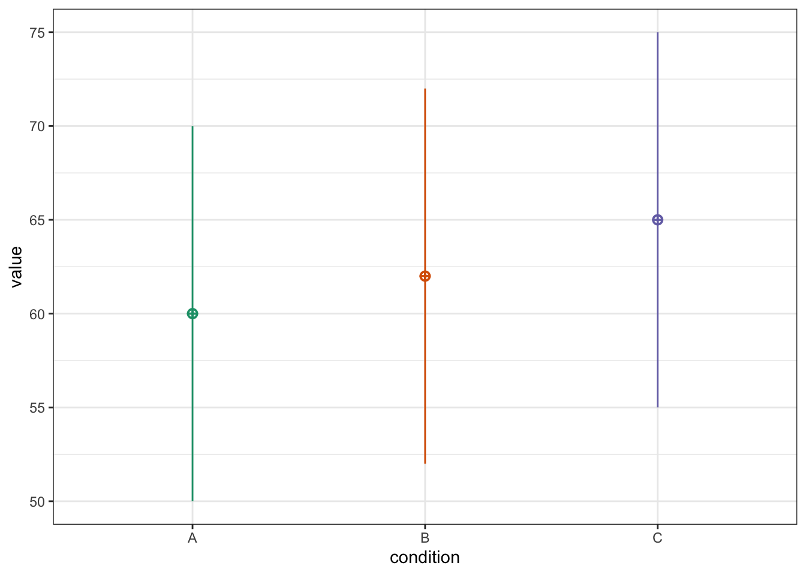
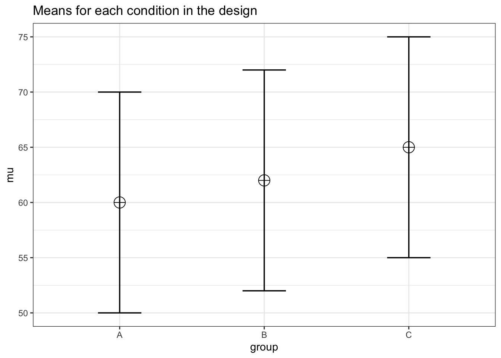
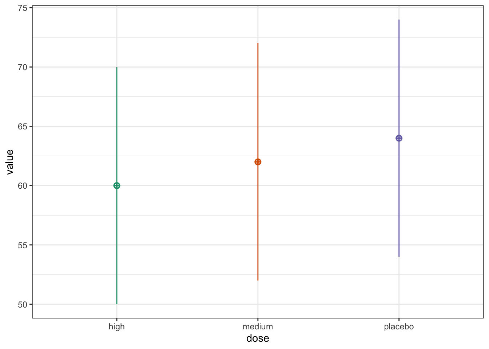
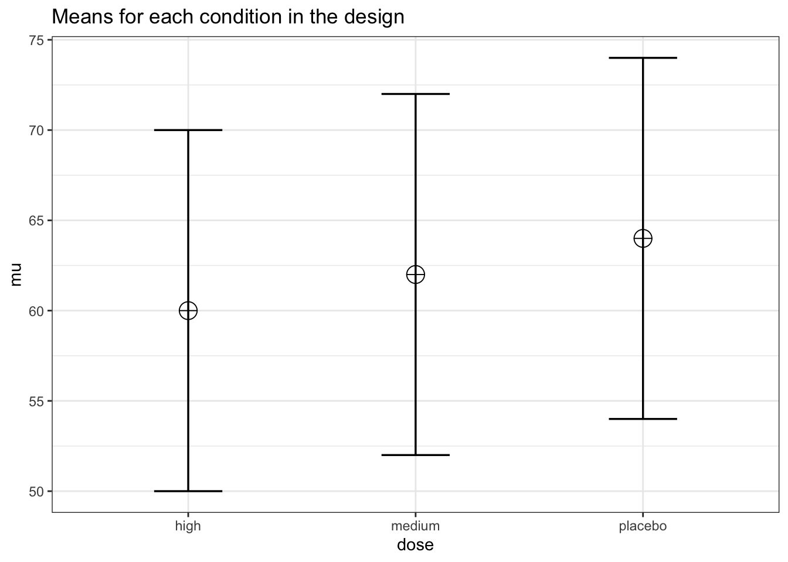
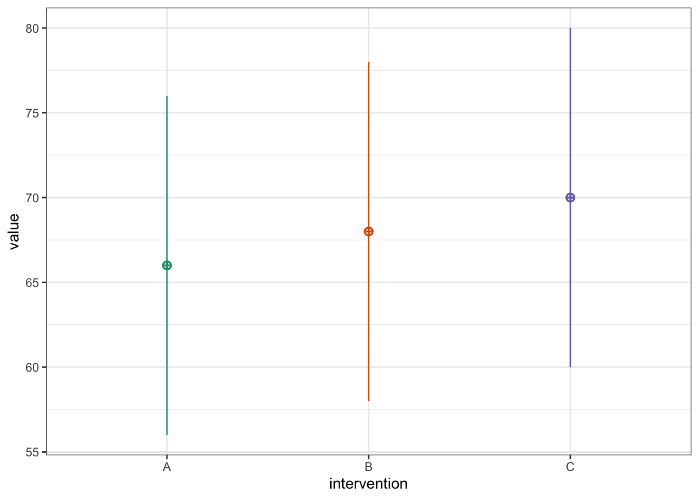
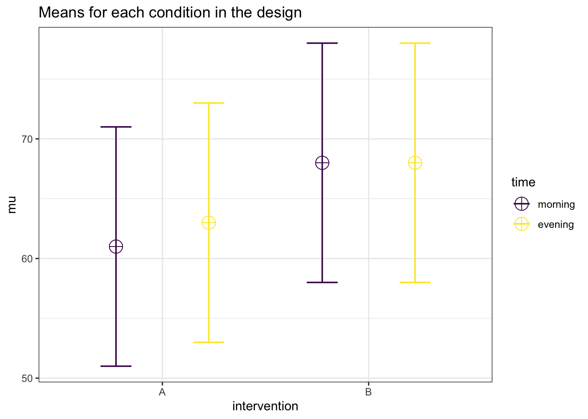
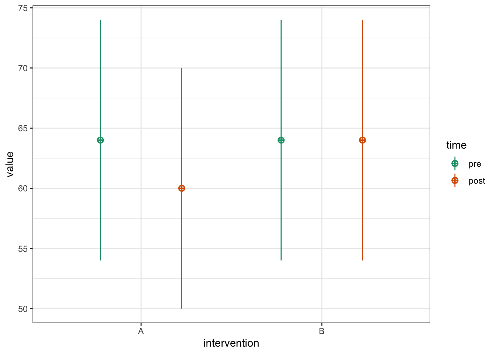
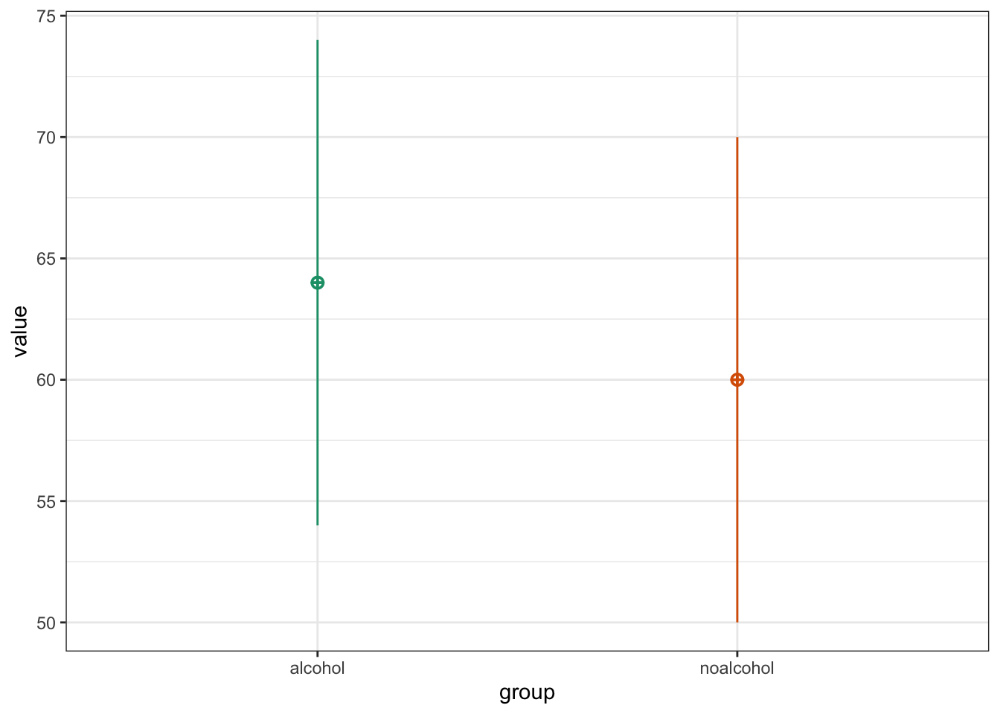

library(knitr)
library(tidyr) # tidy data
library(dplyr) # data wrangling
library(kableExtra) # tables
library(purrr) # perform iterative tasks
library(faux) # simulate factorial data
library(broom) # tidy statistical results
library(emmeans) # pairwise comparisons
library(Superpower) # power analysis for factorial designs6 Factorial designs
6.1 Designs with more than two levels
A design with more than two levels means that the independent variable (factor) has three or more conditions or groups, rather than just two as is typical in a simple t-test. Research designs can also include two or more factors, in which case they are called factorial designs. Each factor can have two or more levels (conditions or groups). A common way to analyse designs with more than two levels is the Analysis of Variance (ANOVA).
When an F-test (i.e., ANOVA) yields a significant p-value, it indicates that there is a statistically significant difference among the condition/group means, but it does not reveal which specific conditions/groups differ from one other. When the null hypothesis is rejected in an F-test, researchers typically perform planned or post hoc pairwise comparisons based on t-tests to identify the specific measurements/groups differences. If the researchers have specific hypotheses about certain group differences, these comparisons should be planned in advance. For instance, a researcher may predict that intervention A is superior to B and C. In such cases, the a priori power analysis should be based on those planned comparisons, rather than the overall ANOVA result. In contrast, when researchers do not have a specific hypotheses, they may just perform post hoc comparisons to explore potential differences after finding a significant overall effect. These are more exploratory in nature and typically require correction for multiple comparisons.
To perform power analysis for research designs with more than two levels, we will (when possible) rely on two approaches. First, we will use the faux package to simulate factorial data and analyze it with base R’s aov() and emmeans() for planned comparisons. For the second approach, we will be using Superpower to both simulate data and perform the analysis. Superpower relies on emmeans for planned comparisons.
6.2 One-factor repeated-measures design
In a repeated-measure factorial designs researchers collect data from the same participants at more than two different time points or conditions. Typically researchers will use a one-way within-subject ANOVA to analyse this study design.
Suppose a researcher hypothesizes that intervention A is more effective than interventions B and C in reducing heart rate. To test this hypothesis, the researcher plans to use a within-subjects (repeated measures) design with three levels, collecting heart rate data from the same participants under each intervention condition.
Let’s define the parameters for the simulation:
6.2.1 Simulation using aov()
Before running the simulation, always make sure that the pattern of means matches the expected pattern of means:
sim_design(
within = list(condition = c("A", "B", "C")),
n = 25,
mu = mu,
sd = sd,
r = rho,
plot = TRUE,
) 
Let’s perform the simulations:
# For reproducibility
set.seed(050990)
# Perform simulations
simulate_power <- function(n) {
p_values <- replicate(nsims, {
df <- sim_design(
within = list(condition = c("A", "B", "C")),
n = n,
mu = mu,
sd = sd,
r = rho,
long = TRUE,
plot = FALSE,
)
aov(y ~ condition + Error(id), df) |>
tidy() |>
filter(term == "condition") |>
pull(p.value)
})
mean(p_values < alpha_level)
}
# Run for all sample sizes
power_results <- tibble(
N = sample_size,
power = map_dbl(sample_size, simulate_power)
)
# Return proportion of significant
power_results |>
kable(digits = 2) |>
kable_styling(full_width = FALSE)| N | power |
|---|---|
| 25 | 0.67 |
| 50 | 0.96 |
| 75 | 0.99 |
| 100 | 1.00 |
The above simulation provides power estimates only for the overall F-test, which tests the null hypothesis that the three conditions are equal. However, in our example the researcher had a specific expected pattern of means (A < B and A < C). Since the hypothesis of interest concerns a specific set of pairwise comparisons, the researcher should ensure that both comparisons are adequately powered. Pairwise comparisons can be tested using Superpower.
6.2.2 Simulation using Superpower
Let’s define the study design:
design_result <- ANOVA_design(
design = "3w", # study design (i.e., three within-subject measurements)
n = 50,
mu = mu,
sd = sd,
r = rho,
labelnames = c("group", "A", "B", "C"),
plot = TRUE
)Warning: `aes_string()` was deprecated in ggplot2 3.0.0.
ℹ Please use tidy evaluation idioms with `aes()`.
ℹ See also `vignette("ggplot2-in-packages")` for more information.
ℹ The deprecated feature was likely used in the Superpower package.
Please report the issue at
<https://github.com/arcaldwell49/Superpower/issues>.Warning: Using `size` aesthetic for lines was deprecated in ggplot2 3.4.0.
ℹ Please use `linewidth` instead.
ℹ The deprecated feature was likely used in the Superpower package.
Please report the issue at
<https://github.com/arcaldwell49/Superpower/issues>.
Setting ANOVA_design(plot = TRUE) returns a plot of the condition means, which is useful for verifying that the intended pattern of means has been specified correctly.
Now let’s run the simulations:
# Run simulation
simulation_result <- ANOVA_power(
design_result,
alpha_level = alpha_level,
nsims = nsims,
verbose = FALSE,
seed = 050990) # for reproducibilityThe power calculation of the omnibus F-test:
simulation_result$main_results |>
kable(digits = 2) |>
kable_styling(full_width = FALSE)| power | effect_size | |
|---|---|---|
| anova_group | 95.3 | 0.15 |
Note that the achieved power is almost identical to the power achieved using aov().
The power calculation of the pairwise comparisons:
simulation_result$pc_results |>
kable(digits = 2) |>
kable_styling(full_width = FALSE)| power | effect_size | |
|---|---|---|
| p_group_A_group_B | 35.9 | 0.23 |
| p_group_A_group_C | 97.7 | 0.57 |
| p_group_B_group_C | 64.2 | 0.34 |
Although the F-test has adequate power to reject the null hypothesis of no difference across conditions (i.e., power = ), only the pairwise comparison between interventions A and C has adequate power (i.e., power = 97.7. Because the difference in heart rate between A and C is larger than that between A and B, the pairwise comparison test for A vs C achieves higher power for any given sample size. Therefore, a larger sample size would be needed to attain comparable power for the A vs B comparison.
6.3 One-factor between-subject design
In a between-subject factorial design researchers collect data from participants that were assigned to more than two different groups. Typically researchers will analyse this study design with a one-way between-subject subject ANOVA.
Suppose a researcher aims to compare the effectiveness of two doses against a placebo by randomly assigning participants to one of three intervention groups. The intervention will be considered effective if any of the two doses result in a significantly reduced heart rate compared to the placebo. Because this involves two multiple comparisons, appropriate adjustments for multiple testing are required in the analysis (i.e., 0.05/2), and these adjustments must be incorporated into the power analysis.
Let’s define the parameters of the simulation:
6.3.1 Simulation using lm()
Let’s define the study design:
sim_design(
between = list(dose = c("high",
"medium",
"placebo")),
n = 50,
mu = mu,
sd = sd,
plot = TRUE,
)
Let’s perform the simulations with this expected pattern of means:
# Perform simulations
simulate_power <- function(n) {
p_values <- replicate(nsims, {
df <- sim_design(
between = list(dose = c("high", "medium", "placebo")),
n = n,
mu = mu,
sd = sd,
plot = FALSE
)
# Fit the between-subject ANOVA with lm()
model <- lm(y ~ dose, df)
# P-value from overall model
overall_p <- anova(model)$`Pr(>F)`[1]
# Pairwise comparisons using emmeans
emm <- emmeans(model, ~ dose)
contrasts <- as.data.frame(contrast(emm, method = "pairwise"))
# Extract p-values for planned comparisons
c(
overall = overall_p,
"high - placebo" = contrasts$p.value[contrasts$contrast == "high - placebo"],
"medium - placebo" = contrasts$p.value[contrasts$contrast == "medium - placebo"]
)
})
# p_values is 3 x nsims matrix, calculate proportion significant
tibble(
comparison = c("overall F-test", "high - placebo", "medium - placebo"),
power = c(
mean(p_values[1, ] < 0.05),
mean(p_values[2, ] < 0.05/2),
mean(p_values[3, ] < 0.05/2)
),
N = n
)
}
power_results <- map_dfr(sample_size, simulate_power)power_results %>%
filter(comparison == "overall F-test") %>%
select(N, power) %>%
kable(digits = 2, caption = "Power for F-test {#tab:power_ftest}") %>%
kable_styling(full_width = FALSE)| N | power |
|---|---|
| 50 | 0.41 |
| 100 | 0.73 |
| 150 | 0.87 |
power_results %>%
filter(comparison == "high - placebo") %>%
select(N, power) %>%
kable(digits = 2,
caption = "Power for high dose vs. placebo {#tab:power_highvsplacebo}") %>%
kable_styling(full_width = FALSE)| N | power |
|---|---|
| 50 | 0.28 |
| 100 | 0.60 |
| 150 | 0.80 |
# Table for A vs C
power_results %>%
filter(comparison == "medium - placebo") %>%
select(N, power) %>%
kable(digits = 2, caption = "Power for medium dose vs. placebo {#tab:power_mediumvsplacebo}") %>%
kable_styling(full_width = FALSE)| N | power |
|---|---|
| 50 | 0.05 |
| 100 | 0.15 |
| 150 | 0.20 |
6.3.2 Simulation using Superpower
Let’s define the study design:
design_result <- ANOVA_design(
design = "3b", # study design (i.e., three between-subject measurements
n = 50, # sample size per group
mu = mu,
sd = sd,
labelnames = c("dose", "high", "medium", "placebo"),
plot = TRUE
)
Now let’s perform the simulations:
simulation_result <- ANOVA_power(
design_result,
alpha_level = 0.05,
nsims = nsims,
verbose = FALSE,
contrast_type = "pairwise",
emm_p_adjust = 0.05/2,
seed = 050990
)The power calculation of the omnibus F-test:
simulation_result$main_results |>
kable(digits = 2) |>
kable_styling(full_width = FALSE)| power | effect_size | |
|---|---|---|
| anova_dose | 42.3 | 0.04 |
Note that the achieved power is almost identical to the power achieved using aov().
The power calculation of the pairwise comparisons:
simulation_result$pc_results |>
kable(digits = 2) |>
kable_styling(full_width = FALSE)| power | effect_size | |
|---|---|---|
| p_dose_high_dose_medium | 16.4 | 0.21 |
| p_dose_high_dose_placebo | 52.3 | 0.41 |
| p_dose_medium_dose_placebo | 16.6 | 0.21 |
Now suppose a researcher hypothesizes that intervention A is more effective than Intervention B, and intervention B is more effective than intervention C in reducing heart rate. This directional hypothesis can be tested by specifying a set of custom contrasts—that is, testing linear combinations of group means that reflect the predicted order (A > B > C).
To evaluate this hypothesis, the researcher plans to use a between-subjects design, randomly assigning participants to three independent groups, each receiving one of the three interventions. Planned contrasts will then be used to test the specific pattern of differences.
Let’s define the parameters of the simulation and plot the expected pattern of means:
# Set parameters
nsims <- 1000 # number of simulations
n <- 50 # sample size per group
mu <- c(66, 68, 70) # expected group means
sd <- 10 # common SD
alpha_level <- 0.05
# Show pattern of means
dat <- sim_design(
between = list(intervention = c("A", "B", "C")),
n = n,
mu = mu,
sd = sd,
plot = TRUE
)
To reflect the directional hypothesis that intervention A < Intervention B < Intervention C in terms of effectiveness (e.g., reducing heart rate), the contrast weights can be specified as –1, 0, and +1, respectively. This linear contrast tests whether there is a monotonic increase in the outcome across the three groups in the hypothesized order.
Result of power calculation for the linear contrast:
# For reproducibility
set.seed(050990)
# Perform simulations
simulate_power <- function(n) {
# Run nsims simulations
p_values <- replicate(nsims, {
# Simulate between-subjects data
df <- sim_design(
between = list(intervention = c("A", "B", "C")),
n = n,
mu = mu,
sd = sd,
plot = FALSE,
long = TRUE
)
# Fit linear model
model <- lm(y ~ intervention, data = df)
# Estimate marginal means
emms <- emmeans(model, ~ intervention)
# Define linear contrast: A = -1, B = 0, C = +1
contrast_list <- list(linear_trend = c(-1, 0, 1))
# Perform contrast test and return p-value
contrast_res <- contrast(emms, contrast_list)
summary(contrast_res)$p.value
})
# Return proportion of significant p-values
mean(p_values < alpha_level)
}
# Run for all sample sizes
power_results <- tibble(
N = sample_size,
power = map_dbl(sample_size, simulate_power)
)
# Print formatted table
power_results |>
kable(digits = 2, caption = "Power for Linear Contrast (A < B < C) {#tab:power_linear}") |>
kable_styling(full_width = FALSE)| N | power |
|---|---|
| 50 | 0.48 |
| 100 | 0.81 |
| 150 | 0.93 |
6.4 Two-factor repeated-measures design
In a two-way repeated-measures factorial design, researchers collect data from the same participants under all combinations of two within-subject factors. This means each participant is exposed to every level of both factors, allowing researchers to examine main effects and interactions.
Suppose a researcher hypothesizes that intervention A is more effective than intervention B in reducing heart rate, but that the effectiveness of intervention A will be increased in the morning compared to the evening. The researchers is specifically interested in:
Comparing whether intervention A is superior to be B both in the morning and evening; and
Comparing whether the effect of the intervention A is superior in the morning vs. evening
Let’s define the parameters of the simulation and plot the expected pattern of means:
# Set parameters
nsims <- 1000 # number of simulations
mu <- c(61, 63, 68, 68) # means
n <- 105 # sample size
sd <- 10 # SD
r <- 0.5 # correlation between measurements
string = "2w*2w" # study design (i.e., two within-subject factors)
alpha_level <- 0.05
design_result <- ANOVA_design(
design = string,
n = n,
mu = mu,
sd = sd,
r = r,
plot = TRUE,
labelnames = c("intervention", "A", "B", "time", "morning", "evening"))
Let’s perform the simulations with this expected pattern of means:
simulation_result <- ANOVA_power(
design_result,
alpha_level = alpha_level,
nsims = nsims,
verbose = FALSE,
seed = 050990)Result of power calculation for the interaction effect:
simulation_result$main_results |>
kable() |>
kable_styling(full_width = FALSE)| power | effect_size | |
|---|---|---|
| anova_intervention | 100.0 | 0.4206939 |
| anova_time | 28.7 | 0.0279819 |
| anova_intervention:time | 28.3 | 0.0277210 |
The current design provides adequate statistical power (> 80%) to detect the main effect of the intervention.
Result of power calculation for the planned pairwise comparisons:
pwc <- simulation_result$pc_results[c(1, 2 , 5),1:2]
pwc |>
kable() |>
kable_styling(full_width = FALSE)| power | effect_size | |
|---|---|---|
| p_intervention_A_time_morning_intervention_A_time_evening | 51.9 | 0.1974114 |
| p_intervention_A_time_morning_intervention_B_time_morning | 100.0 | 0.7022056 |
| p_intervention_A_time_evening_intervention_B_time_evening | 100.0 | 0.5023257 |
The study design would achieve a power of 0.1974114 to test the comparison of intervention A between morning and evening, a power of 0.7022056 to test for the comparison between interventions A and B in the morning and a power of 0.5023257 to test for the comparison between interventions A and B in the evening. To ensure adequate power (80%) for the second pairwise comparison, the researcher should consider increasing the sample size.
6.5 Two-factor mixed design
In a two-factor mixed design (i.e., one between- and one-within-subject design), researchers collect data from participants who were assigned to independent groups (a between-subject factor) and also measured on multiple occasions or conditions (a within-subject factor). This design combines both within- and between-subject factors. When the within-subject factor involves measurements before and after an intervention, the design is specifically referred to as a split-plot design.
In interventions following a split-plot design, it is crucial to account for baseline differences between groups. The most effective way to do this is by including baseline covariates, such as pre-intervention scores, in the analysis model. This approach adjusts the post-intervention outcome for initial differences, thereby yielding a more accurate estimate of the intervention effect and increasing power. While several models have been proposed for analyzing split-plot designs—such as comparing difference scores between groups or testing interaction effects—there is broad consensus that including the the pre-intervention scores as a covariate is the most appropriate method. Including baseline scores as a covariate improves the precision of group comparisons by reducing the error variance associated with the covariate and thus increasing power.
Suppose a researcher hypothesizes that intervention A is more effective than intervention B in reducing heart rate. To test this hypothesis, participants are assigned to either intervention A or intervention B (between-subjects factor: intervention type). Heart rate is measured both before and after the intervention (within-subjects factor: time), allowing the researcher to assess intervention effects over time. The primary test of interest is the interaction effect between intervention type and time, which indicates whether the change in heart rate differs between the two interventions.
Let’s define the parameters:
Let’s visualize the pattern of means:
sim_design(
within = list(time = c("pre", "post")),
between = list(intervention = c("A", "B")),
n = 50,
mu = mu,
sd = sd,
r = rho,
plot = TRUE)
6.5.1 Simulation using lm() including time as a covariate
# Ensure reproducibility
set.seed(050990)
# Power simulation function
simulate_power <- function(n) {
p_values <- replicate(nsims, {
df <- sim_design(
within = list(time = c("pre", "post")),
between = list(intervention = c("A", "B")),
n = n,
mu = mu,
sd = sd,
r = rho,
plot = FALSE) |>
mutate(intervention = factor(intervention, levels = c("B", "A")))
lm(post ~ intervention + pre, data = df) |>
tidy() |>
filter(term == "interventionA") |>
pull(p.value)
})
mean(p_values < alpha_level)
}
# Run function for all sample sizes
power_results <- tibble(
n = sample_size,
power = map_dbl(sample_size, simulate_power)
)
# Return proportion of significant p-values
power_results |>
kable(digits = 2) |>
kable_styling(full_width = FALSE)| n | power |
|---|---|
| 25 | 0.51 |
| 50 | 0.80 |
| 100 | 0.98 |
| 150 | 1.00 |
6.6 One-factor between-subject design with a continuous predictor
This design is similar to the one-way ANOVA but it incorporate a covariate, what is known as an analysis of covariance (ANCOVA). It is used to compare the means of an outcome across two or more groups while controlling for the influence of other variables, called covariates. In other words, ANCOVA allows researchers to compare adjusted group means, accounting for the variability associated with the covariate. Including a covariate improves the precision of group comparisons by reducing the error variance associated with the covariate and thus increasing power.
Suppose a researcher hypothesizes that heart rate differs between individuals who did and did not consume alcohol the previous night. To control for the potential influence of physical fitness, the researcher includes “physical fitness” as a covariate. In this case: 1) heart rate is the primary outcome, 2) alcohol intake (yes or no) is the independent grouping variable, and 3) physical fitness (hours of physical activity per week) is the covariate. By including physical fitness as a covariate, the researcher can control for its influence and better isolate the effect of alcohol consumption on heart rate.
Let’s define the parameters of the simulation and plot the pattern of means:
# Set parameters
nsims <- 1000 # number of simulations
sample_size <- c(50, 100, 150, 200, 250) # sample size
mu1 <- 64 # mean heart rate for alcohol group
mu2 <- 60 # mean heart rate for non-alcohol group
sd <- 10 # SD for both groups
mu3 <- 5 # means hours of exercise (covariate)
sd3 <- 3 # SD of the covariate
rho <- 0.8 # correlation between heart rate and exercise
alpha_level <- 0.05
df <- sim_design(
between = list(group = c("alcohol", "noalcohol")),
mu = list(alcohol = mu1, noalcohol = mu2),
sd = sd,
n = n,
plot = TRUE
) |>
mutate(exercise = rnorm_pre(y, mu3, sd3, rho))
Let’s run the simulations:
# Ensure reproducibility
set.seed(050990)
# Power simulation function
simulate_power <- function(n) {
p_values <- replicate(nsims, {
df <- sim_design(
between = list(group = c("alcohol", "noalcohol")),
mu = list(alcohol = mu1, noalcohol = mu2),
sd = sd,
n = n,
plot = FALSE
) |>
mutate(exercise = rnorm_pre(y, mu3, sd3, rho))
# Ensure group is treated as a factor
df$group <- factor(df$group, levels = c("noalcohol", "alcohol"))
lm(y ~ group + exercise, data = df) |>
broom::tidy() |>
filter(term == "groupalcohol") |>
pull(p.value)
})
mean(p_values < alpha_level)
}
# Run function for all sample sizes
power_results <- tibble(
n = sample_size,
power = map_dbl(sample_size, simulate_power)
)
# Return proportion of significant p-values
power_results |>
kable(digits = 2) |>
kable_styling(full_width = FALSE)| n | power |
|---|---|
| 50 | 0.23 |
| 100 | 0.41 |
| 150 | 0.53 |
| 200 | 0.68 |
| 250 | 0.76 |